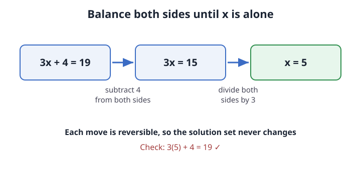

Track 1: Foundations of number and structure
Solving a linear equation by balancing
When does a single unknown have one definite value, and how do you find it without guessing?
Picture the idea

Three flatmates split a wifi bill plus a fixed 4-pound router fee, and the total on the statement is 19 pounds. Writing it as 3x + 4 = 19 lets you read off each person's share without trial and error.
The equation is a balance scale with the same weight on each pan. Whatever you take off one pan you take off the other, and the scale stays level the whole way to x by itself.
Change the router fee from 4 to 10 and keep the total at 19. The same two moves apply, the per-person share drops to 3, and you can see the share fall as the fixed fee rises.
Core Ideas
A linear equation puts two expressions on either side of an equals sign, with the unknown appearing only to the first power. No x², no x under a root, no x in a denominator. Solving means finding every value of the unknown that makes the two sides genuinely equal.
You are allowed exactly two moves, and both keep the solution set identical:
- Add the same quantity to both sides (subtracting is adding a negative).
- Multiply both sides by the same nonzero quantity (dividing is multiplying by a reciprocal).
Both moves are reversible. That reversibility is the reason no solution appears or vanishes along the way: a value that satisfied the old equation satisfies the new one, and back again. The general form ax + b = c with a ≠ 0 always resolves to x = (c − b)/a.
| Line | Move | Why it is legal |
|---|---|---|
| 3x + 4 = 19 | start | given |
| 3x = 15 | subtract 4 both sides | adding −4 is reversible |
| x = 5 | divide both sides by 3 | 3 is nonzero |
You divide both sides of 3x = 15 by 3 to get x = 5. Why is dividing by 3 a legal move here but dividing by 0 would never be?
- Dividing both sides by the same nonzero number is reversible, so it keeps the solution set; dividing by 0 is undefined and cannot be undone.
- Dividing by 3 is smaller, so it changes the equation less than dividing by a larger number would.
- You may divide by any number as long as you do it to both sides, including 0.
- Division is only legal after every addition step is finished.
The legality rests on reversibility: multiplying back by 3 returns the previous line. The tempting wrong answer treats "both sides" as the whole rule, but 0 has no reciprocal, so the move cannot be undone and the step is invalid.
Where this shows up
You and two flatmates owe a flat 4-pound delivery fee plus an equal split of the food order, and the card was charged 19 pounds. Reading the receipt as 3x + 4 = 19 tells you each person owes 5 pounds before anyone argues about it.
The balance picture holds only while the unknown stays linear. The moment the bill depends on x² (say a late fee that grows with the square of the days overdue), subtracting and dividing no longer isolate x in two clean steps, and the single-solution promise breaks.
Figure it out from scratch
Start With a Real Question
What value of x makes both sides truly equal?
- guessing scales badly
- need a move that cannot lose answers
Say It in Plain Words
Peel away everything stuck to x, same move both sides.
- undo addition first
- undo multiplication last
What It Is Made Of
A coefficient, the unknown, a constant, an equals sign.
- coefficient a scales x
- constant b shifts it
Now Write the Equation
ax + b = c solves to x = (c − b)/a
- works whenever
a ≠ 0 - check by substituting back
Try the Simplest Case
Take 3x + 4 = 19 by hand.
- subtract 4 to get
3x = 15 - divide by 3 to get
x = 5
Find Where It Breaks
When a = 0 the unknown vanishes.
0x + 4 = 19has no solution0x + 4 = 4has every solution
Explain It to a Friend
A linear equation is a balanced scale holding the same value on each side. The unknown has a coefficient multiplying it and a constant added on, so you reach it by undoing the addition and then the multiplication, doing each move to both sides. Every move is reversible, which is why you never gain or lose an answer. The simplest case, 3x + 4 = 19, peels to x = 5 in two steps. It stops being this clean the moment the coefficient on x is zero, because then x has dropped out and the line tells you either nothing or everything.
How to reason about this
Check your understanding
- Why does multiplying both sides by zero break the method, while multiplying by any other number is safe?
- In
ax + b = c, what does the sign ofatell you about how x responds when c grows? - How can you tell, before solving, whether
5x + 2 = 5x + 9has zero, one, or infinitely many solutions?
Show you understand
Build an equation whose answer you already know is x = −3, then hand it to a friend and watch them solve it. Make it stress the negative-coefficient case, for example −4x + 1 = 13, and confirm their two moves land on −3.
Build it yourself
Turn one real shared cost from your week into a linear equation and solve for the per-person share.
- Gather a real receipt with a fixed fee plus an equal split (a group food order, a shared subscription, a taxi with a base fare).
- Write it as
nx + f = T: n people, fixed fee f, total T, unknown share x. - Predict x by the two balancing moves, then check by paying that share n times plus f and confirming you land on T.
- Sanity-check against a known anchor: set f = 0 and confirm x = T/n, the plain even split.
You have it when your computed share, multiplied by the number of people and added to the fixed fee, reproduces the real total exactly.
Push further: add a second flatmate who pays double, making the equation (n + 1)x + f = T with one person at 2x, and re-derive each share.
| Criterion | Weak | Strong |
|---|---|---|
| Setup | guesses a share | writes a correct nx + f = T from the receipt |
| Moves | combines steps and slips a sign | does one reversible move at a time |
| Check | stops at an answer | substitutes back to the real total |
Pass threshold: all three rows at Strong, and your check reproduces the real total to the penny.
Weak answer example: "Each person pays 19 ÷ 3 = 6.33." That forgets to remove the fixed 4-pound fee first, so it over-charges everyone.
If you miss the check: redo the subtraction step alone, confirm the fixed fee is gone before you divide, then re-substitute before moving on.
Practice in Levels
Worked
Solve 2x + 5 = 17. Subtract 5 from both sides to get 2x = 12. Divide both sides by 2 to get x = 6. Check: 2(6) + 5 = 17. Correct.
Faded
Solve 4x − 3 = 13. First move: add ____ to both sides. You should reach 4x = ____. Second move: divide both sides by ____. Final: x = ____.
Worked solution
Add 3 to both sides to get 4x = 16. Divide both sides by 4 to get x = 4. Check: 4(4) − 3 = 13.
Independent
Solve −5x + 2 = 17, the negative-coefficient case. Show both moves and check your answer.
Model answer
Subtract 2 to get −5x = 15. Divide both sides by −5 to get x = −3 (a positive divided into a negative gives a negative). Check: −5(−3) + 2 = 15 + 2 = 17.
Transfer
A taxi charges a 3-pound base fare plus a per-kilometre rate, and a 7-kilometre trip cost 17 pounds. The original case split a fixed fee across people; here the unknown is a rate, not a share, and it multiplies a distance instead of a count. Find the per-kilometre rate and say which quantity now plays the role of the coefficient.
Rubric
Correct setup 7r + 3 = 17, so 7r = 14 and r = 2 pounds per kilometre. The invariant is the balancing method; the changed surface is that the distance 7 is now the coefficient and the rate r is the unknown. Full credit names that swap explicitly.
Module check
Each question targets the reasoning behind balancing, not the arithmetic alone.
Solving −5x + 2 = 17, a student writes x = −15/5 = −3 but then says "x is negative because the answer came out below zero on the left." What is the correct account?
- x = −3 is correct, and the sign comes from dividing 15 by −5, not from any feature of the left side's appearance.
- x = 3, because two negatives in the problem cancel to make x positive.
- x = −3, but only because 17 is larger than 2.
- The equation has no solution since the coefficient is negative.
After subtracting 2 you get −5x = 15, then x = 15/(−5) = −3. The sign is set by the negative coefficient you divide by. The tempting "two negatives cancel" answer misfires because there is only one division, by −5, not a pair of cancelling negatives.
For which value of a does ax + 6 = 6 have infinitely many solutions rather than exactly one?
- a = 0, because then the equation reads 6 = 6, true for every x.
- a = 6, because the coefficient matches the constant.
- a = 1, because that gives the simplest line.
- No value of a does this; a linear equation always has one solution.
When a = 0 the unknown drops out, leaving 6 = 6, which every x satisfies. The "a = 6" distractor confuses matching numbers with the structural fact that only a vanishing coefficient removes x from the equation.
You multiply both sides of x/2 − 1 = 3 by 2 as your first move and get x − 1 = 6. What went wrong?
- Multiplying by 2 must hit every term on both sides, so the −1 should become −2, giving
x − 2 = 6. - Nothing;
x − 1 = 6is correct and gives x = 7. - You should never multiply before subtracting.
- Multiplying by 2 is illegal because 2 is even.
A both-sides multiply distributes across every term, so −1 scales to −2 and the line is x − 2 = 6, giving x = 8. The tempting answer leaves the constant untouched, the single most common slip when clearing a fraction.
In ax + b = c with a fixed positive a, what happens to the solution x as you increase c?
- x increases, because
x = (c − b)/agrows when c grows and a is positive. - x decreases, because a larger right side pushes x down.
- x stays the same, because a is unchanged.
- x flips sign each time c increases.
From x = (c − b)/a, raising c raises the numerator, and dividing by a positive a keeps the direction, so x rises. The "x decreases" distractor imagines the right side weighing x down, but the algebra shows c and x move together when a > 0.